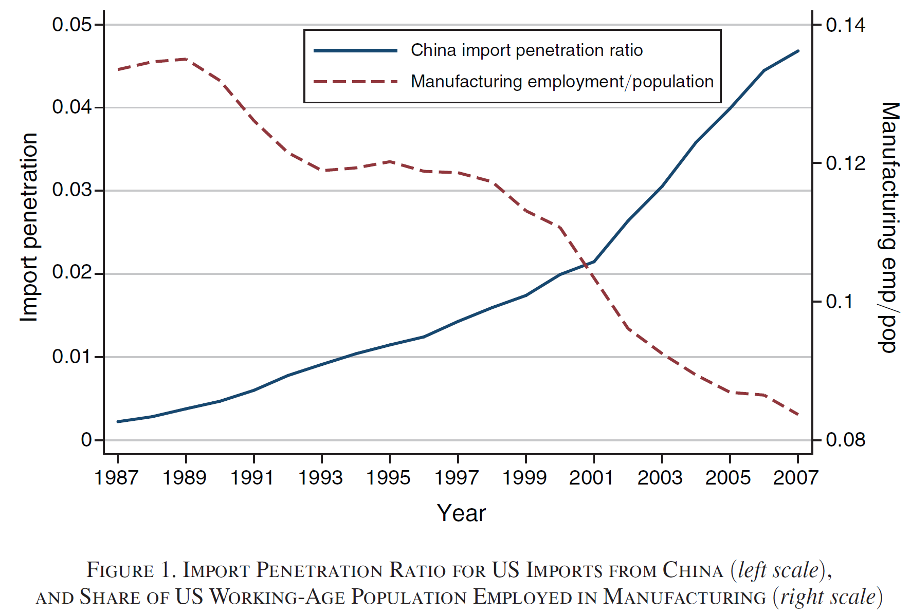
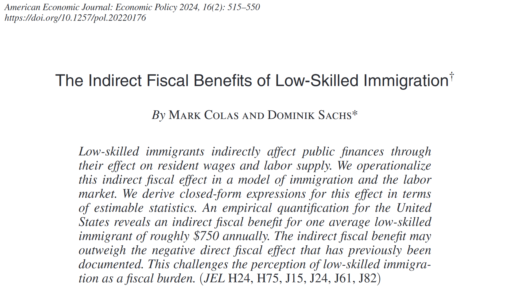
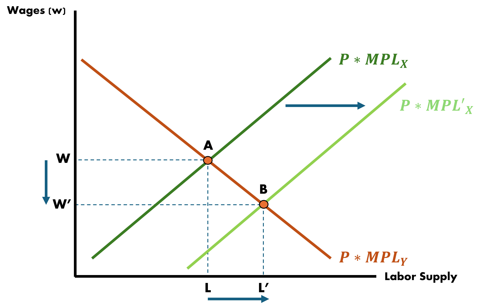

Trade Theory | Issues and Empirics
EC 380 - International Economic Issues
2025
Recap
So far we have done a lot of work on learning trade theory
Comparative advantages determine trade flows
Differences in technology, factor endowments, location, and prosperity can all help countries decision to specialize
- This can either be for final or intermediate goods
Recent technological advances have fragmented production processes across countries, furthering the importance of trade
Now we will focus on issues of trade with respect to jobs, wages, migration, and political economy
Employment
Economic Trends
Manufacturing has been on a long downward trend in NA and West EU for decades
Wage inequality increased, particularly in the US with a primary effect on young, low-education, and less-skilled workers
Throughout this period, trade saw its greatest bout of liberalization due to:
- Widespread tariff reductions
- Ascensions of major economies such as China to the World Trade Organization (WTO) and;
- Reductions in direct trade costs (Advancement in technology)
Economic Trends
With the economy experiencing these long trends of declining manufacturing employment and wage reductions questions come up
- Where are these jobs going?
- Are low wages abroad influencing wage levels in developed economies?
The number of jobs depends on age profile, size of population, labor market policies, and the state of the business cycle
While trade does not act as the main influence of jobs level for large open economies, it might affect specific sectors in a particularly focused manner
The China Shock - Abstract
The China Shock - Manufacturing Employment
The China Shock - Regression Results

The China Shock - Conclusion
To quote the authors concluding remarks:

Trade research has increasingly attempted to incorporate considerations for marginalized groups resulting from globalization
Trade & Employment
- Trade with less developed countries has potentially led to spillover effects on local wage rates
Up until recently, decline in low-skill wage rates was only somewhat attributed to increased trade openness
It was initially suggested that tech improvements were driving the marginal productivity of skilled labor upward, driving up the wage gap
Since 2000, this gap has stagnated, leaving experts without a main explanatory factor anymore
Trade & Employment
Research in this area has seen a resurgence given that previously accepted reasoning on it has become outdated
A natural question that comes up is whether trade or technology plays a larger role in sector-specific outcomes
I think this question is too broad and not entirely helpful to counteract the issue
It may also redirect much needed attention from research that addresses how to facilitate reallocation among displaced manufacturing workers
Trade & Employment
Manufacturing firms that adopt specific technologies, such as computers or industrial automation, are significantly different from those that do not
- They are larger and more productive upon adoption
While exposure to greater import competition is associated with employment decline, firms that increase their use of imported goods conditional on such exposure can exhibit employment gains
Should direct use of imported goods be considered a technological input?
Poverty and Inequality
If there are documented negative effects, how about positives?
Does International Trade Reduce Poverty & Income Inequality?
- In 2013, China had 13.9% of the world’s skilled labor and 39.8% of the world’s less skilled labor
- For the same year, China held 16% of world GDP
- This makes them abundant in:
- Low-skilled labor
- And scarce in High-skilled labor
- Trade openness translates to elevated demand for low-skill workers, and their wages rise
Poverty
“Towards the End of Porverty” from The Economist has the following to say:
- The number of people living off of $1.25 per day was cut by one-half over the past 20 years
- It has declined from 43% of the World Population in 1990 to 21% in 2010
- Attributes much of this achievement to China
“China is responsible for three-quarters of the achievement… even though income equality is rising fast, extreme poverty is disappearing. China pulled 680m people out of misery in 1981-2010 and reduced its extreme poverty from 84% to 10%.”
Inequality
While global poverty has fallen due to free trade, what about income inequality?
- Income inequality has been increasing
- Higher incomes are rising more rapidly than lower incomes
- The same is true of the US \(\Rightarrow\) The relative wages of skilled workers has been rising
This may seem counter-intuitive to what the HO model predicts
A model of offshoring better explains this phenomenon but is beyond this course
Migration
Labor Supply
So far our models have kept labor supplies fixed across countries and not allowed for migration of labor between countries
Workers were able to switch sectors in Ricardian, HO, and Specific Factors models but not country
If we were to incorporate this migration-feature into a model it may make it more realistic
Cause of Migration
There are many possible and imaginable reasons individuals may migrate. We can categorize them into:
Push Factors
Pull Factors
Social Networks
Migration: Push Factors
These are things that may incentivize individuals to move away from their origin country
- Local purchasing power being too low
- Housing too expensive
- Recessions
- Political strife/violence/uncertainty
- War & famine
Climate change and related agricultural patterns may induce further mass-migrations in the coming future
Migration: Pull Factors
These are things that may draw people into a receiving country
- Income levels
- Healthcare
- Socioeconomic stability
- Educational support/institutions
Migration: Social Networks
Not Facebook. But rather “personal reasons” that may draw individuals and make them congregate in certain places:
- Family ties
- Local affinities to surroundings
- Ethnic groupings/enclaves
- Insider opportunities
Migration - Theory
In theory, suppose we were in a scenario where trade was already open and now we wanted to allow for the free movement of labor
In theory, free movement of labor will see wages harmonize across countries as we saw them across industries in our simple models
It will do that to an extent, but the gap between countries will still exist somewhat
The European Union is a great real-world example of this process:
- Brexit placed a great deal of focus on limiting the movement of people while trying to ekep the movement of goods open
Migration - Practice
In practice, empirics have shown evidence of effects of low-skilled worker inflows not impacting other local worker groups

Migration - Practice
Our very own Mark Colas recently published:
Migration - Practice
In practice, high-skilled migrant influxes show a similar lack of impact

Migration: Effects on Wages
We will keep it simple by assuming there are:
- Two countries
- Produce a single good made with labor and an immobile factor
Since there is only one good, there is no reason to trade however there will be “trade” in labor services
- Workers move in search of higher wages
In the absence of migration, wage differences across countries can be through technology differences, or differences in the availability of the immobile factor
Migration: Effects on Wages

Migration: Effects on Wages
Home workers: \(OL^{1}\)
Foreign workers: \(L^{1}O^{*}\)
Immobile Factor endowments are different and cause real wages to be higher in Foreign (point B) than in Home (Point C)
Who moves where?
Home workers will migrate to Foreign
This reduces the Home labor force and raises the real wage in Home
In Foreign the opposite occurs
Migration: Short-Run
Let’s view a stylized example of how migration may impact local labor markets in the Short-Run
Recall the OH model, where labor can move between industries but capital is fixed
We also have that labor is a sum of both industry labor, such that:
\[\bar{L} = L_{x} + L_{y}\]
Migration: Short-Run

Migration: Short-Run
Migration: Short-Run
Effects
- Immigration causes total labor to change: \(\bar{L}' = \bar{L} + \Delta L\)
- Shifting out the supply curve of industry \(x\) causes the corresponding marginal productivity curve to shift right by \(\Delta L\)
Migration: Short-Run
Equilibrium Outcomes
- Number of workers in both industries rises
- Wages across both industries fall
- Why?
- Labor became less scare/more abundant, relative to the fixed amount of capital/land
Migration: Long-Run
In the Long-Run other things are allowed to move which makes outcomes somewhat different:
- Given a rise in labor (\(\bar{L}\) to \(\bar{L}'\) in our example), capital/land/labor ratios readjust
- Immobile factors are free to shift in the Long-Run
- Instead of what we see in the Short-Run, these ratios adjust to ideal levels such that ideal production levels are maintained
- \(\Delta L\) will flow entirely into the labor-intensive industry
Political Economy
Political Economy of Trade
There are many points of view of how international trade should be treated through a political view
Up until now we have seen there are both good and bad outcomes of trade, happening at the exact same time
Take for example the following scenario:
- In the US, workers in the import-competing sectors earn wages substantially below the average wage, and those workers earning the lowest wage face the highest risk of separation from their current employer due to import competition
Political Economy: Possible Outcomes
We have workers in import-competing sectors earning lower wages than average and facing a higher risk of unemployment
Let’s take the example of production workers in the apparel sector in 2019 where wages were below 25% the average wage for all production workers
We could have:
- There may be widespread sympathy for the situation these workers are going through and, consequently, restrictions on apparel imports
- If this happens, gains from more affluent consumers that would have happened with more imports do not realize.
Political Economy: Trade is Good?
Most economist sure think so
There are three main reasons why economists do not generally stres the income distribution effect of trade:
Income distribution effects are not specific to international trade
It is always better to allow trade and compensate those who are hurt by it than to prohibit the trade
Those who stand to lose from increased trade are typically better organized than those who stand to gain.
This rings somewhat true if we are considering industries.
But people are not industries, and when in a democracy, people have the ability to influence their political context
Electoral Competition
Let me introduce some political science concepts to motivate possible political shifts due to trade
Suppose the following:
- There are two competing parties that are willing to promise whatever will enable each to win the next election
- Policy can be described along one dimension
- Something simple like a tariff rate level
- Voters differ in the policies they prefer
Electoral Competition - Example
Let’s think of a simple example:
Imagine a country that exports skill-intensive goods and imports labor-intensive goods. Political parties are divided alongside the level of tariff rate to impose
There are two type of voters:
High-skill voters
- Prefer low tariff rates
Low-skill voters
- Prefer high tariff rates
Think what the Stolper-Samuelson Theorem says to explain this
What Policy to Choose?
If we think about lining up all the voters in the order of the tariff rate they prefer, with the voters who favor the lowest rate on the left and those who favor the highest rate on the right we get:

Median Voter
Parties will converge on the tariff rate preferred by the median voter
To see why, think what happens if one party takes the position of tariff \(t_{A}\)
The other party could propose a slightly lower rate \(t_{B}\), which is preferred by almost all other voters.
It is always in their interest to undercut any tariff proposal that is higher than what the median voter wants
Median Voter and Trade
Interestingly enough, the median voter model does not seem to work well for trade policy
According to this model, a policy should be chosen based on how many voters it pleases:
A policy that inflicts large losses on a few people but benefits a large number of people should be a political winner
A policy that inflicts widespread losses but helps a small group should be a loser
However, this is not usually the case:
Usually, voters consider protectionist trade policy which will benefit only a few while harming a majority
- Think of the US diary industry which is protected through an elaborate system of tariffs and quotas
- These restrictions make dairy products slightly more expensive for consumers while benefiting an industry which employs about 0.1% of the workforce
Importing Political Polarization?
Autor et al - Importing Political Polarization (2020)
Autor et al - Importing Political Polarization (2020)
Autor et al - Importing Political Polarization (2020)

Autor et al - Importing Political Polarization (2020)
Non-White
White
EC380, Lecture 03 | Issues & Empirics